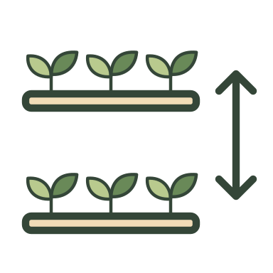
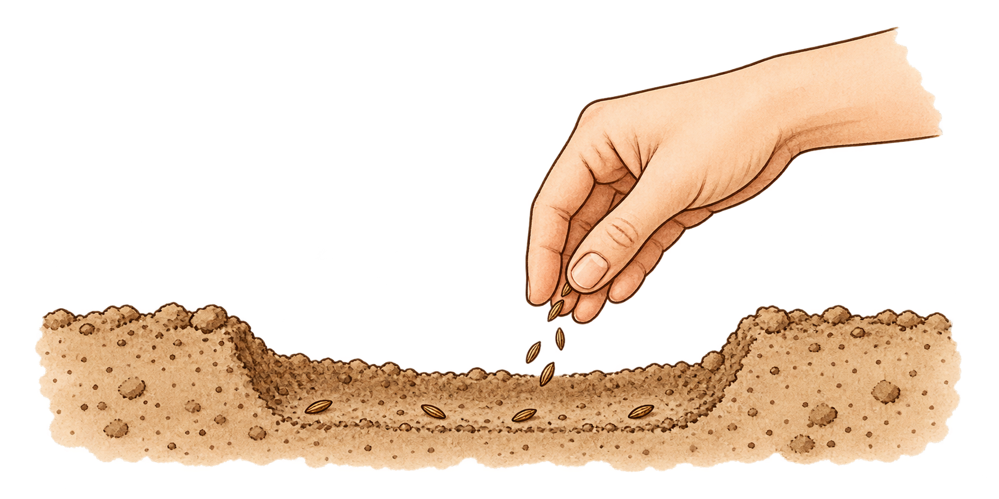
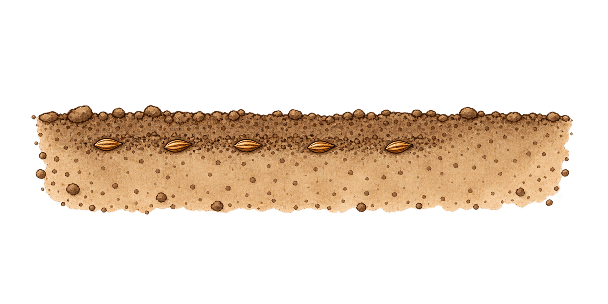
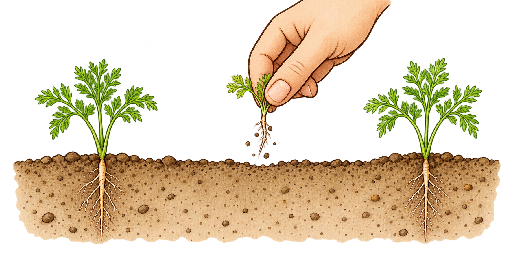

SOW
Apr – Jun

Freshly pulled carrots have a sweet, earthy flavour that shop-bought roots rarely match. They are also one of the more awkward crops to establish well: germination can be slow, seedlings are vulnerable to slugs, and the roots need deep, fine, stone-free soil if they are to grow straight and tender. Once growing, however, carrots are very rewarding, especially if sown in short successions so that roots can be lifted from early summer into autumn. Good moisture, careful thinning, and protection from carrot fly make a big difference.
Apr – Jun
Aug – Oct
17 days
1/2 in.

6 in. between rows
Thin to 2-3 in. apart
early: 8 lb; maincrop: 10 lb
Early ~12; maincrop ~16 weeks from sowing
Solid: usual months · Pale: earlier/later crops
Most popular maincrop; stump-rooted, deep orange flesh, smooth skin.
A round carrot - an excellent choice for shallow soils.
A good carrot of the Nantes type which is recommended for sowing under cloches in early March.
Tell-tale signs on carrots are reddish leaves which wilt in sunny weather and later turn yellow.
Fanging is usually caused by adding manure or compost to the soil shortly before seed sowing.
Aphids and virus will stunt growth and reduce yield, but even in the absence of pests and diseases many gardeners produce disappointingly small carrots.
Much more serious than fanging of carrots, because the roots will not store.
Deep, fertile, stone-free and sandy soil is ideal.
Follow a crop manured the previous year.
Weeds can easily smother them.

Sow direct, very thinly, in shallow drills.

Cover lightly with fine soil or compost.

Thin young seedlings to the final spacing below.
Mix seed with sand, sow into warmed soil and keep the seedbed moist.
| Problem | What to look for | What to do |
|---|---|---|
| Carrot Fly | Tunnelled roots. | Use fine mesh; remove thinnings; avoid bruising. |
| Fanging | Forked roots | Remove stones, improve soil deeply and avoid fresh manure. |
| Small Roots | Small roots; weak growth. | Improve soil; use organic feed if growth is poor. |
| Splitting | Split roots. | Water evenly; mulch in drought; use split roots now. |
| Sclerotinia Rot | White mould; rotting roots. | Remove diseased roots; store sound roots; rotate. |
| Carrot-Willow Aphid | Distorted, stunted leaves. | Squash damaging colonies; encourage predators. |
| Black Rot | Black lesions on stored roots. | Remove rotten roots; store sound roots; rotate. |
| Motley Dwarf Virus | Yellow mottling; red outer leaves. | No cure; remove affected plants. Monitor aphids. |
| Green Top | Green exposed crowns. | Earth up to cover exposed root tops. |
| Violet Root Rot | Purple felt-like growth on roots. | Destroy affected roots; never store them; rotate. |
Avoid fresh manure and disturbance around established roots.
Work from one end of the row when harvesting.
Inspect stored roots and remove any that rot.